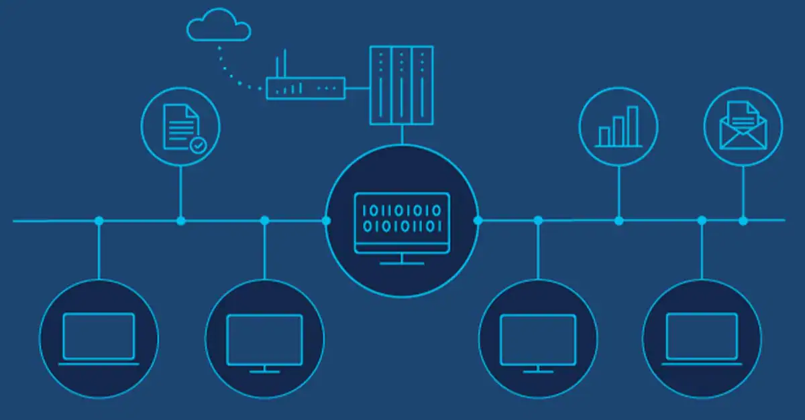

10 Skills Every IT Project Manager Needs
Between 2020 and 2030, new jobs for computer and information systems managers will increase by 11%. Also, Lightcast jobs data indicated that 33% more jobs for IT project managers and project managers were listed between May 2021 to April 2022 than in the previous 12-month period. Additionally, 1 out of 4 IT hiring managers list project management skills in IT job vacancies.
IT project manager is obviously a trending role in the tech industry, and one worth looking into. But why the sudden strong demand for IT project managers? The answer might surprise you.
IT project management is in-demand, and the reason for this is simple: Organizations have had to move everything to the cloud over the past couple years due to the pandemic. As a result, they’ve been burdened with new regulatory requirements, increased automation and communication problems between departments and teams.
Before delving into the skills required to be an IT project manager, it’s important to make a distinction between the roles of IT project manager and project manager. In short, project managers oversee projects that are not only of an IT nature. A program manager or project manager at a health care organization is an example of a project manager working in a non-IT context. Conversely, IT project managers are tech specialists who oversee IT projects.
1. A creative mindset: IT project managers are masters of thinking outside the box. They are open-minded to different solutions to problems and foster this same mindset in IT project team members. They are often skilled at articulating their creative ideas to others and eliciting feedback.
2. The ability to make complex decisions: Decision-making and critical thinking are a huge part of an IT project manager job. Those working in IT project management have honed the skill of making complex decisions in a timely manner, and they are comfortable making decisions as part of a team or on their own. Their creative mindset improves their ability to make complex decisions.
3. Leadership: It is vital that IT project managers possess leadership skills as they must oversee initiatives and entire IT project teams. Great IT project managers set IT project team members up for success by calling out their strengths and showing them practical ways to strengthen their weaknesses. Leadership skills encompass active listening, empathy, organization and strong ethics. These skills are usually more “caught than taught,” and are most often learned on the job.
4. Negotiation and accountability: IT project managers are usually great with negotiation and accountability. IT project managers should be able to compromise with others to find satisfactory solutions, promote better IT project outcomes and meet the needs of all parties. They should also have the willingness to accept accountability for their leadership role and own up to their mistakes.
5. Goal setting: Goal setting is one of the core capabilities of an IT project manager. Those who work in IT project management should be excellent at setting goals and helping IT project teams meet them. They should know how to break goals down into bite-sized pieces to prevent themselves or their team members from getting overwhelmed. As a result of effective goal setting, important milestones in the project lifecycle are reached, such as key deliverables and obtaining approval from a stakeholder.
Recommended Articles:

Przykładowy artykuł 1
Eum quam harum rem quae praesentium est voluptatem porro! Est numquam fugiat a expedita magni est illo velit!
Et quas omnis aut culpa amet eos voluptatem necessitatibus cum doloribus expedita.

Przykładowy artykuł 2
Eum quam harum rem quae praesentium est voluptatem porro! Est numquam fugiat a expedita magni est illo velit!
Et quas omnis aut culpa amet eos voluptatem necessitatibus cum doloribus expedita.